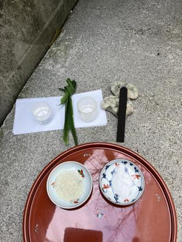

うるがいの話 ある日
最新: オリオン座【うるがいの話 ある日】とは 一日だけのプログです
『うるがいの話』の最新一日だけのプログで、通信料が少なく経済的だ。カニの画像をクリックすると全ての日付が載る『うるがいの話』サイトを表示します
|
|
【うるがいの話】 うるがい(ｳﾙｶﾞｲ urugai)とは、『もずくがに』の名前でとても大きくなります。 |
|---|---|
|
|
【カミマヤーの話】 猫のことを方言でマヤーといいます。カミマヤー（kamimayaa）とは、神の猫のことです。 |
|
【たながぁの音楽】 たながぁ（ﾀﾅｶﾞｰ tanagaa）とは手長えびのことで、何種類かあり大きいのは車 エビぐらいになります。 |

|
【ぶながぁの話】 ぶながぁ(ﾌﾞﾅｶﾞｰ bunagaa)とは、赤い髪の毛、赤い身体、そして身長は１ｍ２０ｃｍ ぐらい、川の蟹を食べているの目撃された。場所は沖縄県国頭郡大宜味村のと ある村僕の隣近所に住んでいる爺さんから、聞いた話です。 |
|
|
【ギーマの話】 ギーマ(giima)とは、山原の里山に咲くスズランに似た、 花を付けます。実は食べられます、 気が付くと口の周りが紫になっています。 |
2024年02月03日 (土）オリオン座
20:25
現在@niftyホームページサービス ミニを利用しています。
LaCoocanライトを利用した場合は、HTTPSセキュアのサイトになりますか。
以上です
「＠niftyホームページサービス」につきましては、現在SSL機能に対応してお
りません。
また、大変恐縮ではございますが現状SSL機能に対応する予定はございません。
このたびはお客様のご要望にお応えすることができず、大変心苦しい限りでは
ございますが、何卒ご容赦くださいますようお願いいたします。
２０２１年１０月２４日のメールのやり取りです、ＶＰＮ機能のオンにしたら
唯一、セキュリテイ対策ができていない『うるがいの話』だけが、プログのア
ップデートができない！。仕方ないので、アップデートの時はオフにしている
。あと、市立図書館などへのサイトは、レスポンスが遅くなっている。
＠niftyは、このままではまずいと思うが。
昨日、仕事を終えジョギングを終えると７時前、夜空を見上げると『オリオン
座』が、見えた。４年ふりかも、会社は夕方５時までの勤務、他の社員がこん
なに早く帰れると喜んでいた。フーン、それでも自宅に帰るまで時間がかかる
。在宅の連中は、通勤がないのだ。在宅組とおもろまちへの通勤組の違いが、
私にはまだ分からない。

夕方に、屋敷うがん（ウグァンブトゥチ）をする。旧暦では１２月２４日、ま
だウサギ年である。終わると直ぐににわか雨が降る。それにしても暑い、只今
扇風機をつけている。
今日２月３日は節分です。立春（２月４日）の前日です。
今日の節目に、去年から引きずる邪気（悪魔・悪い心）を祓います。
邪気を追い祓うための悪霊祓いの行事が、古代から執り行われて来ました。
１７時３１分 ビットコインの総資産 ￥１８、４９８（↑１２４）